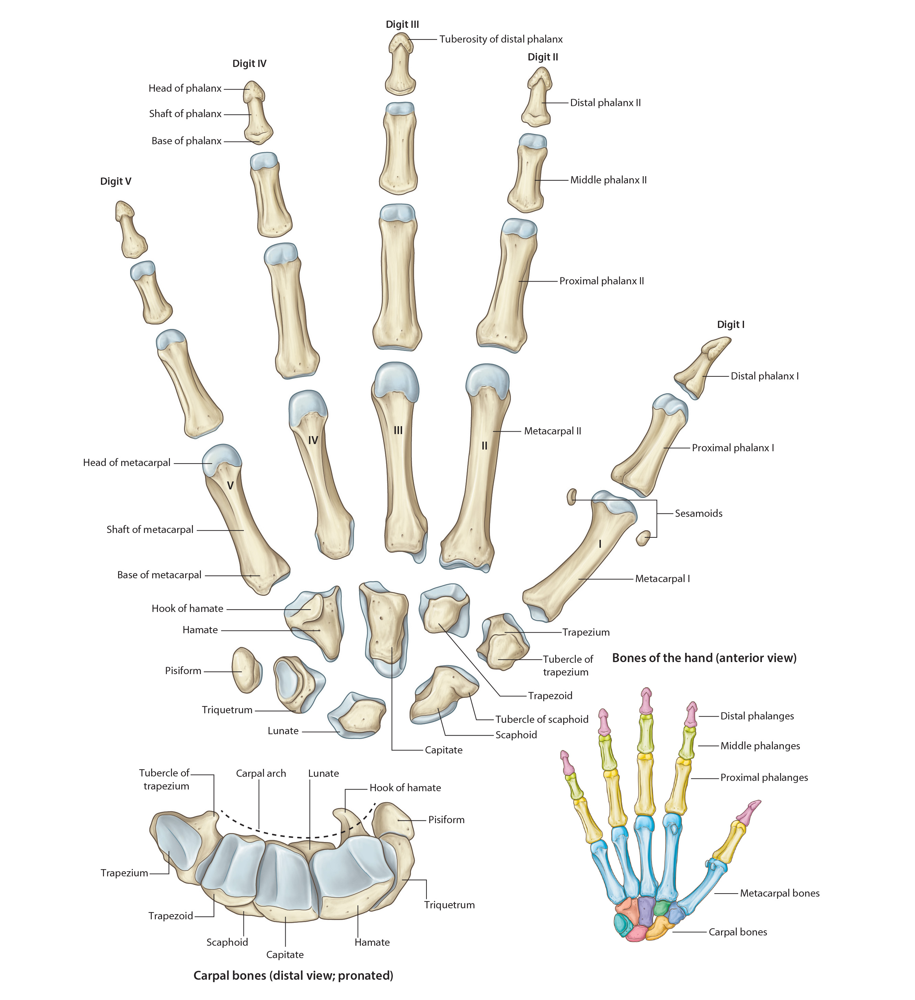

Lab3 - Module 2 - Anatomy of the Arm and Forearm: Page 2 of 11
Bones of the Hand
|  |
| Tap on image to enlarge |
| Add the Bones of the Hand. |
| The Carpus – eight small bones of the wrist are called the carpal bones; arranged in proximal and distal rows, each with four bones. |
| The Proximal Row – (Lateral to Medial) consists of the Scaphoid, Lunate, Triquetrium and Pisiform. |
| Highlight the Scaphoid. |
| Highlight the Lunate. |
| Highlight the Triquetrium. |
| Highlight the Pisiform. |
| The Distal Row (Lateral to Medial) consists of the Trapezium, Trapezoid, Capitate, and Hamate (which has a prominent halmus or hook). |
| Highlight the Trapezium. |
| Highlight the Trapazoid. |
| Highlight the Capitate. |
| Highlight the Hamate. |
| • The carpus has and anterior concavity known as the carpal groove, which is converted into an osseofibrous carpal tunnel by the flexor retinaculum (attached to the scaphoid and trapezium bones laterally and to the pisiform and hook of the hamate medially). The carpal tunnel is completely filled with tendons and the median nerve. Compression of the median nerve in the carpal tunnel produces carpal tunnel syndrome. |
| • The scaphoid and the trapezium lie in the floor of the anatomical snuff box. The scaphoid is the most frequently fractured carpal bone and one of the most frequently fractured bones in the body. |
| Highlight the Metacarpus. There are five metacarpal bones in the hand extending from the carpus to the digits and numbered 1-5 starting from the lateral side. |